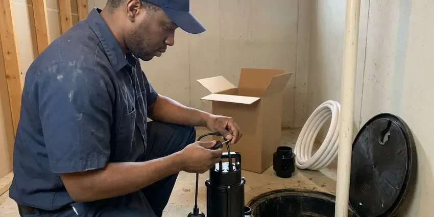
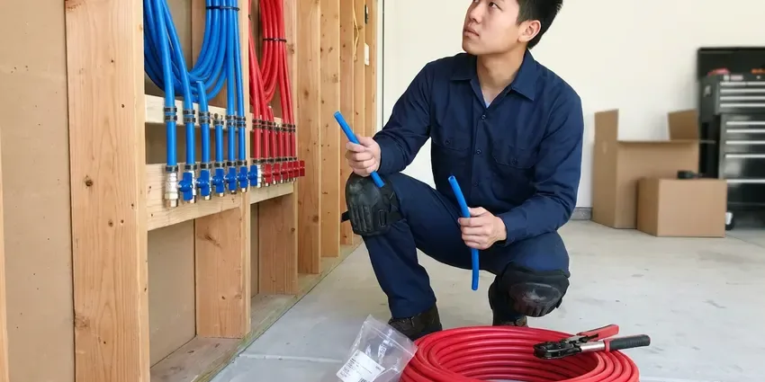

Water Heater Expansion Tank Installation in Florence, AL
For reliable water heater expansion tank installation that meets all local Alabama codes, trust the professionals at BRV Plumbing in Florence.
- Fast, Reliable Service
- Expert Plumbers
- Local Florence Team
- Upfront Pricing

Protect Your Plumbing, Call Us in Florence, AL.
Contact BRV Plumbing today for a free estimate and ensure your system is protected.
Your Go-To for Water Heater Expansion Tank Installation in Florence, AL
Our team at BRV Plumbing understands the specific needs of homes in Florence. We provide expert water heater expansion tank installation services, ensuring your system operates safely and efficiently, protecting your investment from thermal expansion.
Our expertise includes:
- Code-compliant expansion tank sizing and installation
- Protecting water heaters from thermal expansion damage
- Expert installation for all water heater types

Additional Plumbing Installation Services in Florence, AL
We install water heaters, pumps, lines, and fixtures across Florence, AL with careful, permitted work that passes inspection the first time.


Professional sump pump installation, Florence


Customers
Why Choose BRV Plumbing for Water Heater Expansion Tank Installation in Florence, AL?
Installing a water heater expansion tank is not just about compliance, it's about protecting your entire plumbing system. Without one, thermal expansion can cause significant stress on your pipes and water heater, leading to premature failure.
- System Protection, An expansion tank absorbs excess pressure caused by heating water, protecting your water heater and pipes from damage.
- Code Compliance, Many local plumbing codes in Alabama require expansion tanks, especially for new water heater installations or homes with closed systems.
- Water Heater Lifespan, By mitigating pressure fluctuations, an expansion tank can significantly extend the life of your water heater.
Citywide Coverage
No matter where you're located in Florence, our skilled technicians are readily available to provide timely and efficient water heater expansion tank installation, ensuring your system is up to code.
Experienced Team
Each plumber at BRV Plumbing is committed to delivering quality workmanship and precise installation, ensuring your water heater expansion tank functions perfectly for years to come.
Safety-First Approach
Safety and code compliance are paramount for every water heater expansion tank installation we perform. We adhere strictly to all manufacturer guidelines and local Alabama plumbing codes.
Trusted Certified Florence Plumbing Services Professionals
At BRV Plumbing, we take pride in providing licensed, certified plumbing services throughout Florence, AL. Backed by leading industry credentials, our experienced plumbers combine technical skill with genuine customer care. Whether it is repair, installation, or maintenance, we follow strict safety and quality standards to deliver long-lasting results you can trust.
Call Us Now PHCC Plumbing Contractor Recognition
PHCC Plumbing Contractor Recognition Better Business Bureau (BBB) Accreditation
Better Business Bureau (BBB) Accreditation Angi Certified Pro
Angi Certified Pro ISO 9001 Quality Management Certification
ISO 9001 Quality Management CertificationReliable Water Heater Expansion Tank Installation Services in Florence, AL
Residential Expansion Tank Installation in Florence
For homeowners in Florence, a properly installed water heater expansion tank is crucial, especially with the prevalence of closed-loop plumbing systems. This device absorbs the increased volume of water when it heats, preventing excessive pressure from building up in your pipes and water heater. Our team ensures the tank is correctly sized for your water heater's capacity and your home's water pressure, maximizing its protective benefits. We handle all connections and secure the tank according to industry standards, giving you peace of mind.

Commercial Expansion Tank Installation in Florence, AL
Commercial properties in Florence, AL often have larger water heaters and more complex plumbing systems, making expansion tank installation even more critical. Higher hot water demands mean greater thermal expansion. We install commercial-grade expansion tanks designed to withstand heavy usage and larger water volumes, adhering to strict commercial plumbing codes. Our experienced plumbers ensure minimal disruption to your business operations while performing efficient and compliant installations that protect your valuable equipment.
Tank Sizing and Placement in Florence
Correct sizing and placement are key to an effective water heater expansion tank in Florence. An undersized tank won't provide adequate protection, while an oversized one is an unnecessary expense. We accurately calculate the required tank volume based on your water heater's capacity, system pressure, and average water temperature. Placement is also important, typically near the water heater on the cold water inlet line, ensuring easy access for future maintenance or inspection. Our expertise guarantees optimal performance.
Code-Compliant Installations in Florence, AL
Local plumbing codes in Florence, AL often mandate the installation of expansion tanks, particularly when a backflow preventer or pressure-reducing valve creates a closed system. BRV Plumbing stays up to date with all current Alabama regulations and ensures every expansion tank installation is fully compliant. We obtain any necessary permits and perform installations that pass inspection, safeguarding your home and avoiding potential fines or insurance issues. Trust us for installations that meet or exceed all local requirements.
Replacing Old Expansion Tanks in Florence
Expansion tanks don't last forever, and an old, waterlogged, or corroded tank offers no protection. If your existing tank in Florence is showing signs of failure, such as a dripping relief valve or fluctuating water pressure, it's time for a replacement. We expertly remove the old unit, dispose of it responsibly, and install a new, correctly sized expansion tank. This proactive replacement prevents costly damage to your water heater and plumbing system, restoring proper pressure regulation.
Expansion Tank for Tankless Water Heaters in Florence, AL
While tankless water heaters don't store hot water, an expansion tank can still be beneficial, and sometimes required, in Florence, AL plumbing systems. If your tankless unit is part of a closed system, an expansion tank can help absorb pressure spikes from the cold water supply or reduce wear on components. Our plumbers assess your specific tankless setup and local codes to determine if an expansion tank is necessary and recommend the ideal solution to enhance your system's longevity and performance.
Preventing Water Heater Damage in Florence
Thermal expansion is a leading cause of premature water heater failure in Florence homes. Without an expansion tank, the constant pressure fluctuations stress the water heater's tank, connections, and internal components, leading to leaks, reduced efficiency, and a shorter lifespan. Our installation service directly addresses this issue, providing a buffer that protects your investment. This small addition can save you thousands in future water heater repair or replacement costs.

Brands and Quality Products in Florence, AL
BRV Plumbing uses only high-quality, durable expansion tanks from reputable manufacturers known for their reliability. We work with trusted brands like Watts, Amtrol, and Z-Flex, ensuring you receive a product built to last in your Florence, AL home. Our commitment to quality extends from the materials we use to the precision of our installation, providing you with a long-lasting solution that effectively protects your plumbing system.
Water Heater Expansion Tank Installation Near Me in Florence, AL
When you search for 'water heater expansion tank installation near me' in Florence, AL, BRV Plumbing is your reliable local choice. Our team is strategically located to respond quickly to your plumbing needs across the entire Florence area.
We pride ourselves on being the trusted local plumbing experts for water heater expansion tank installation near me. Our deep understanding of Florence's plumbing systems ensures a quick, efficient, and code-compliant service every time.
BRV Plumbing at a Glance
- Fully licensed plumbing team covering Florence, AL
- 24/7 emergency service with same-day scheduling
- Upfront, flat-rate pricing before work begins
- 4.8-star rated by 549+ Alabama customers
Florence Map
Florence Information
- Population
- 42,437
- Area codes
- 256/205/662
- Service area
- Florence and communities within 40 miles
- Nearby
- Athens, Decatur, Madison, Huntsville
For homes in Florence, AL, where municipal water systems often include backflow prevention, a water heater expansion tank is vital to manage thermal expansion and protect your plumbing system from undue stress.
Expert Services
Trust our professionals for reliable BRV Plumbing solutions in Florence, AL.
Our Specialized Plumbing Services in Florence, AL
At BRV Plumbing, we provide a complete range of plumbing services across Florence, AL. From leak detection to full system installations, our team ensures fast, precise, and affordable service for both residential and commercial properties. Explore our core services below:


How Our Water Heater Expansion Tank Installation Process Works in Florence, AL
We follow a proven method for every expansion tank installation, guaranteeing a professional and compliant setup for your Florence home.
Request a Quote
Contact us at (256) 391-9413 or fill out our online form to schedule an initial consultation. We'll discuss your needs and provide a clear, upfront estimate.
On-Site Assessment
Our expert plumber will visit your Florence home to assess your current water heater and plumbing system. This ensures accurate sizing and placement for the expansion tank.
Professional Installation
We will expertly install your new water heater expansion tank, adhering to all local Alabama codes and manufacturer specifications. We ensure a clean, secure, and fully functional setup.
Frequently Asked Questions About Water Heater Expansion Tank Installation in Florence
The cost for water heater expansion tank installation in Florence typically ranges from $250 to $500, including parts and labor. This can vary based on the tank size, complexity of the installation, and any necessary plumbing modifications. We provide transparent, upfront pricing after an on-site assessment.
We install high-quality expansion tanks from leading manufacturers known for their reliability and durability. Our preferred brands include Watts, Amtrol, and Z-Flex, ensuring you receive a product built to last and perform effectively.
Common signs of a failing expansion tank include a continuously dripping T&P (temperature and pressure) relief valve on your water heater, fluctuating water pressure, or a waterlogged tank (which you can test by tapping it, a full tank will sound dull). If you notice these, it's time for an inspection.
Permit requirements for expansion tank installation in Florence, AL can vary depending on local jurisdiction and the scope of work. We always check and secure any necessary permits for our installations to ensure full code compliance and your peace of mind.
While some homeowners may attempt DIY installation, it's highly recommended to have a professional plumber install your expansion tank. Proper sizing, placement, connection, and adherence to local plumbing codes are crucial for safety and effective operation. Incorrect installation can lead to leaks or system damage.
Most standard water heater expansion tank installations can be completed within 1 to 2 hours. More complex installations, or those requiring significant pipe modifications, might take a bit longer. Our plumbers work efficiently to minimize disruption to your home.
A typical water heater expansion tank can last anywhere from 5 to 10 years. Factors like water quality, system pressure, and initial installation quality can influence its lifespan. Regular inspections can help identify when a replacement is needed.
An expansion tank is essential in closed plumbing systems to absorb the increased water volume and pressure that occurs when water is heated. Without it, this thermal expansion can damage your water heater, pipes, and fixtures, leading to leaks and premature system failure. Many local Alabama codes require them.
What People Are Saying About Our Plumbing Experts?

Robert G.
The trenchless sewer replacement saved our front yard. They walked us through the camera inspection footage first so we knew exactly what we were paying for.
Sewer Line Replacement · Madison, AL
Laura S.
I scheduled a water heater replacement, and the team made the process smooth and affordable. The new unit works perfectly, and they cleaned up after completing the job.
Water Heater Replacement · Decatur, AL
Patricia H.
We had a slab leak that two other companies could not find. BRV Plumbing located it in under an hour, explained our options, and the price matched the quote to the dollar.
Slab Leak Repair · Florence, AL
Emily R.
I called BRV Plumbing for plumbing repair, and the technician was fast, polite, and thorough. They explained the problem clearly and fixed it the same day. I will definitely hire them again. Highly recommended!
Plumbing Repair · Florence, AL
Daniel K.
A pipe burst at 11 pm and they actually answered. The plumber showed up within the hour, shut everything down, and had us back to normal the next morning. Could not ask for more.
Emergency Plumbing · Vestavia Hills, AL
Mark T.
When our office needed drain cleaning, BRV Plumbing provided quick, reliable service. The plumber arrived on time and made sure every drain flowed perfectly before leaving. Very satisfied.
Drain Cleaning · Huntsville, AL